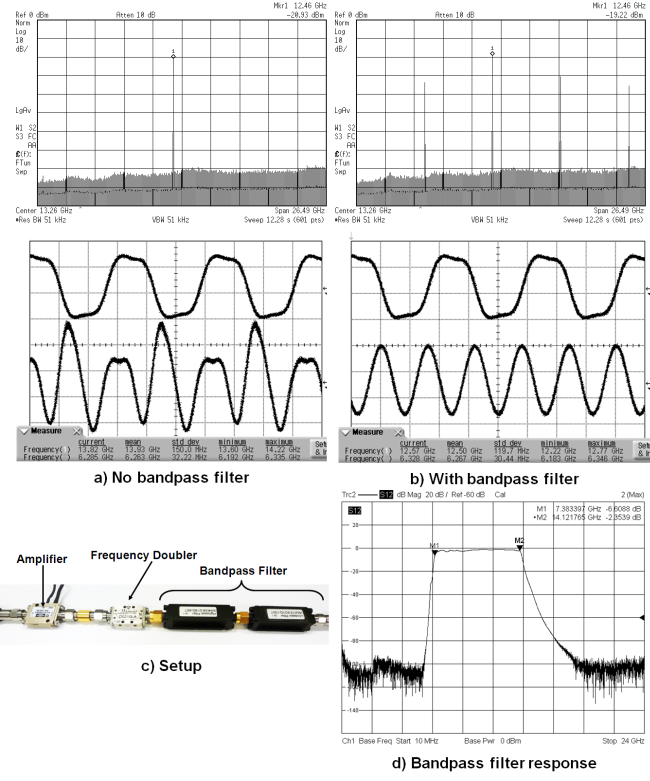
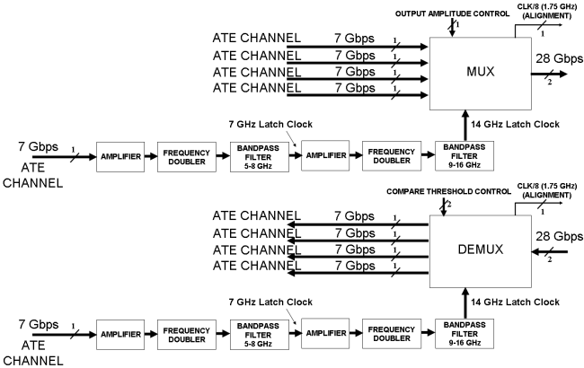
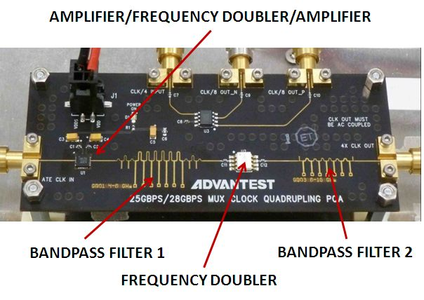
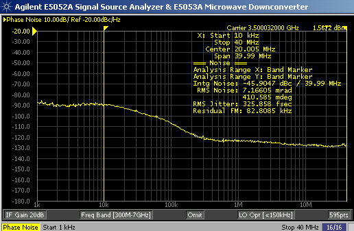
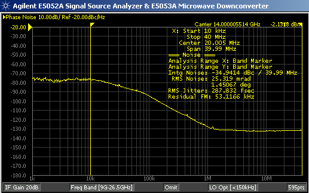

Using Frequency Doublers in High-Speed Digital Applications
Jose Moreira, Advantest
Paper ID: 138517 December 2012
Abstract
Frequency doublers are non-linear devices used extensively in RF applications but they can also be very useful in high-speed digital applications. In this technical note we will present one example of the usage of frequency doublers for high-speed digital applications.
Key Words
High-Speed Digital, Frequency Doublers, Clock Doubling, Clock Quadrupling
Frequency doublers in high-speed digital applications
In some high-speed digital applications it might be very necessary to double or quadruple the frequency of a bit clock from an ATE channel to be able to reach a higher bit clock frequency than the ATE channel can reach. One option is to MUX digital channels using a digital gate [1] but there is usually an increase on the jitter especially if the channels being muxed are not properly aligned.
Another option is to use a non-linear passive device called frequency doubler together with an appropriate bandpass filter [2]. Figure 1 shows an example of a frequency doubling setup made only from off-the-shelf coaxial components. The challenge that a frequency doubler presents is first the very large loss (usually above 10 dB) which is solved by using an amplifier and the fact that harmonics will also be present together with the doubled input frequency at the output requiring band-pass filter. The output waveform will also be sinusoidal but that is not a problem when using the waveform as a clock for a digital circuit.
Figure 1 shows an example of a clock doubling setup where one can see the output with and without the bandpass filter to remove the frequency doubler harmonics. In the setup shown in Figure 1 the amplifier was from Herotek (www.herotek.com), the frequency doubler from Marki Microwave (www.markimicrowave.com) and the lowpass and bandpass filters from Wainwight Instruments GmbH (www.wainwright-filters.com).
Clock quadrupling is also possible by for example using two frequency doublers in series. This approach is used in a 28 Gbps active test fixture solution shown in Figure 2 and described in [3]

Figure 1: Example of a clock doubling setup using of-the-shelf coaxial components including coaxial lowpass and bandpass filters. a) Shows the output from the clock doubler without any bandpass filter and b) with bandpass filter. The input frequency was 6.25 GHz resulting in an output frequency of 12.5 GHz.

Figure 2: Block diagram of the 28 Gbps active test fixture solution using a clock quadrupling circuit [3].
In this case the clock quadrupling circuit was implemented in a printed circuit board using surface mounted components and microstrip filters as shown in figure 3. The board also includes a separate clock divider. The interesting point on this board is not only the usage of surface mounted components but the implementation of the band-pass filters using custom designed microstrip filters [4].

Figure 3: Example of a clock quadrupling circuit implemented on a printed circuit board using microstrip bandpass filters.
Figure 4 shows the measured phase noise before and after the clock quadrupling board. In this case a V93000 PinScale HX channel was used at 3.5 GHz (7 Gbps bit clock) which resulted on a final frequency of 14 GHz (28 Gbps bit clock). The results demonstrate that the clock quadrupling circuit has no real impact on the phase noise.


Figure 4: Measured phase noise at the output of the PinScale HX ATE channel at 7 Gbps or 3.5 GHz (left) and after the clock quadrupling setup (right).
References
[1] Jose Moreira and Hubert Werkmann, An Engineer’s Guide to Automated Testing of High-Speed Interfaces, Artech House 2010.
[2] S. A. Maas, Nonlinear Microwave and RF Circuits 2nd Edition, Artech House 2003.
[3] Jose Moreira, Bernhard Roth and Callum McCowan, "An Active Test-Fixture Approach for 28Gbps Test using Standard ATE", Asian Test Symposium 2012.
[4] Giovanni Bianchi and Roberto Sorrentino, Electronic Filter Simulation & Design, McGraw Hill 2007.